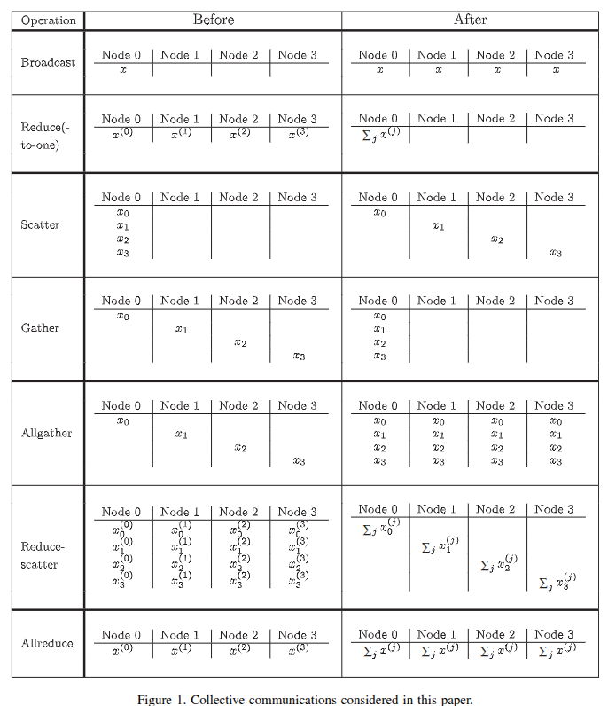

23) Collective communication#
Last time:
Blocking and non-blocking point-to-point communications
Today:
MPI Collective Communication
Minimum Spanning Trees
1. MPI Collective Communication#
Tip
Resources for the lecture:
Article: Chan et al., Collective communication: theory, practice, and experience
Lecture Notes from the University of Texas at Austin: Robert van de Geijn (RVDG) Collective Communication: Theory and Practice
In the previous lecture we considered point-to-point communication, that is communication between two MPI ranks. In this lecture we will consider communication that involves all the ranks in a communicator.
Reductions#
Recall that reductions are a case of collective communication operations.
An operator is a reduction operator if:
It can reduce an array to a single scalar value.
The final result should be obtainable from the results of the partial tasks that were created.
These two requirements are satisfied for commutative and associative operators that are applied to all array elements.
Example#
Suppose we have an array \(x = [1,2,3,4,5,6,7,8]\). The sum of this array can be computed serially by sequentially reducing the array into a single sum using the + operator.
Starting the summation from the beginning of the array yields:
Since + is both commutative and associative, it is a reduction operator. Therefore this reduction can be performed in parallel using several processes/cores, where each process/core computes the sum of a subset of the array, and the reduction operator merges the results.
Using a binary tree reduction would allow \(4\) processes/cores to compute
So a total of \(4\) cores can be used to compute the sum in \(\log_n \equiv \log_2 8 = 3\) steps instead of the \(7\) steps required for the serial version.
Of course the result is the same, but only because of the associativity of the reduction operator. The commutativity of the reduction operator would be important if there were a master core distributing work to several processors, since then the results could arrive back to the master processor in any order. The property of commutativity guarantees that the result will be the same.
From Fig. 1 in Chan et al.

Types of possible collective communication:
Broadcast: one rank sends data to all the other ranks (RVDG: 93,
MPI_Bcast)Reduce(-to-one): Combine (e.g.,
sum,max/min, etc.) information from all ranks to one rank (RVDG: 94,MPI_Reduce)Scatter: One rank send data to all other ranks (RVDG: 96,
MPI_Scatter)Gather: All ranks send data to one rank (RVDG: 97,
MPI_Gather)Allgather: All ranks sends information to all ranks (RVDG: 99,
MPI_Allgather)Reduce-scatter: Reduce and scatter out the reduced result (RVDG: 101,
MPI_Reduce_scatter)Allreduce: All ranks combine information from all ranks and the result is available to all ranks (RVDG: 102,
MPI_Allreduce)
Note that there are pairs of reciprocal/dual operations:
Broadcast/Reduce(-to-one) (RVDG: 95)
Scatter/Gather (RVDG: 98)
Allgather/Reduce-scatter (RVDG: 101)
Allreduce is the only operationthat does not have a dual (or it can be viewed as its own dual).
Two broad classes of collective operations (Chan et al., 1752):
Data redistribution operations: Broadcast, scatter, gather, and allgather. These operations move data between processors.
Data consolidation operations: Reduce(-to-one), reduce–scatter, and allreduce. These operations consolidate contributions from different processors by applying a reduction operation. We will only consider reduction operations that are both commutative and associative.
2. Minimum Spanning Trees (MST)#
2.1 Broadcast#
We want to perform a broadcast operation, i.e., we want to send a message from a root rank to all ranks.
Naive Algorithm#
A naive broadcast just has the root send the message to each rank.
You can find the following code at julia_codes/module6-3/naivebcast.jl.
1# Naive broadcast just has the root send the message to each rank
2function naivebcast!(buf, root, mpicomm)
3 # Figure out who we are
4 mpirank = MPI.Comm_rank(mpicomm)
5
6 # If I am the root send the message to everyone
7 if mpirank == root
8 # How many total ranks are there
9 mpisize = MPI.Comm_size(mpicomm)
10
11 # Create an array for the requests
12 reqs = Array{MPI.Request}(undef, mpisize)
13
14 # Loop through ranks and send message
15 for n = 1:mpisize
16 # MPI uses 0 based indexing for ranks
17 neighbor = n-1
18
19 # If its me jst set my request to NULL (e.g., no-op)
20 if neighbor == mpirank
21 reqs[n] = MPI.REQUEST_NULL
22 else # otherwise send message to neighbor
23 reqs[n] = MPI.Isend(buf, neighbor, 7, mpicomm)
24 end
25 end
26 # Wait on all the requests
27 MPI.Waitall!(reqs)
28 else # Since we are not the root, we receive
29 MPI.Recv!(buf, root, 7, mpicomm)
30 end
31end
And the following testing code at julia_codes/module6-3/naivebcast_test.jl.
1using MPI
2include("naivebcast.jl")
3
4let
5 # Initialize MPI
6 MPI.Init()
7
8 # store communicator
9 mpicomm = MPI.COMM_WORLD
10
11 # Get some MPI info
12 mpirank = MPI.Comm_rank(mpicomm)
13 mpisize = MPI.Comm_size(mpicomm)
14
15 # Divide all ranks halfway to determine the root
16 root = div(mpisize, 2) # Integer division
17
18 # create buffer for the communication
19 buf = [mpirank]
20
21 # have root broadcast message to everyone
22 naivebcast!(buf, root, mpicomm)
23
24 # check to make sure we got back the right message
25 @assert buf[1] == root
26
27 MPI.Barrier(mpicomm)
28 time = @elapsed begin
29 naivebcast!(buf, root, mpicomm)
30 MPI.Barrier(mpicomm)
31 end
32
33 # Let's print the execution time:
34 # Short hand for:
35 #=
36 if mpirank == 0
37 print("Execution time: ", time,"\n")
38 end
39 =#
40 mpirank == 0 && print("Execution time: ", time,"\n")
41
42 # shutdown MPI
43 MPI.Finalize()
44end
Minimum Spanning Tree Algorithm#
See Chan et al. Fig. 3(a) & Fig 4(a); RVDG pages 108-171.
You can find the following code at julia_codes/module6-3/mstbcast.jl.
1# Example implementation of MSTBcast (Fig. 3(a)) from
2# Chan, E., Heimlich, M., Purkayastha, A. and van de Geijn, R. (2007),
3# Collective communication: theory, practice, and experience. Concurrency
4# Computat.: Pract. Exper., 19: 1749–1783. doi:10.1002/cpe.1206
5#
6# In this minimum spanning tree (mst) broadcast algorithm:
7# - Divide ranks into two (almost) equal group
8# - root sends data to one rank in other group (called the dest)
9# - recurse on two groups with root and dest being the "roots" of respective
10# groups
11#
12# For nine ranks with root = 1 the algorithm would be (letters just represent
13# who sends/recvs data)
14#
15# 0 | 1 | 2 | 3 | 4 | 5 | 6 | 7 | 8
16# ---------------------------------
17# | x | | | | | | |
18# | a | | | | | | | a 1->8
19# | a | | | a | | b | | b 1->4, 8->6
20# | a | a | c | c | d | d | b | b 1->2, 4->3, 6->5, 8->7
21# a | a | x | x | x | x | x | x | x 1->0
22function mstbcast!(buf, root, mpicomm;
23 left = 0, right = MPI.Comm_size(mpicomm)-1)
24
25 # If there is no one else, let's get outta here!
26 left == right && return
27 # Short hand for:
28 #=
29 if left == right
30 return
31 end
32 =#
33
34 # Determine the split
35 mid = div(left + right, 2) # integer division
36
37 # Whom do I send to?
38 dest = (root <= mid) ? right : left
39 # Short hand for:
40 #=
41 if root <= mid
42 dest = right;
43 else
44 dest = left;
45 end
46 =#
47
48 # Figure out who we are
49 mpirank = MPI.Comm_rank(mpicomm)
50
51 # If I'm the root or dest send or recv (respectively)
52 req = MPI.REQUEST_NULL
53 if mpirank == root
54 req = MPI.Isend(buf, dest, 7, mpicomm)
55 elseif mpirank == dest
56 MPI.Recv!(buf, root, 7, mpicomm)
57 end
58
59 # Recursion:
60 # I'm in the left group and the root is my new root
61 if mpirank <= mid && root <= mid
62 mstbcast!(buf, root, mpicomm; left=left, right=mid)
63 # I'm in the left group and the dest is my new root
64 elseif mpirank <= mid && root > mid
65 mstbcast!(buf, dest, mpicomm; left=left, right=mid)
66 # I'm in the right group and the dest is my new root
67 elseif mpirank > mid && root <= mid
68 mstbcast!(buf, dest, mpicomm, left=mid + 1, right=right)
69 # I'm in the right group and the root is my new root
70 elseif mpirank > mid && root > mid
71 mstbcast!(buf, root, mpicomm, left=mid + 1, right=right)
72 end
73
74 # Make sure all my sends are done before I get outta dodge
75 MPI.Wait!(req)
76end
And the following testing code at julia_codes/module6-3/mstbcast_test.jl.
1using MPI
2include("mstbcast.jl")
3
4let
5 # Initialize MPI
6 MPI.Init()
7
8 # store communicator
9 mpicomm = MPI.COMM_WORLD
10
11 # Get some MPI info
12 mpirank = MPI.Comm_rank(mpicomm)
13 mpisize = MPI.Comm_size(mpicomm)
14
15 # Divide all ranks halfway to determine the root
16 root = div(mpisize, 2) # Integer division
17
18 # create buffer for the communication
19 buf = [mpirank]
20
21 # have root broadcast message to everyone
22 mstbcast!(buf, root, mpicomm)
23
24 # check to make sure we got back the right message
25 @assert buf[1] == root
26
27 MPI.Barrier(mpicomm)
28 time = @elapsed begin
29 mstbcast!(buf, root, mpicomm)
30 MPI.Barrier(mpicomm)
31 end
32
33 # Let's print the execution time:
34 # Short hand for:
35 #=
36 if mpirank == 0
37 print("Execution time: ", time,"\n")
38 end
39 =#
40 mpirank == 0 && print("Execution time: ", time,"\n")
41
42 # shutdown MPI
43 MPI.Finalize()
44end
Let’s compare them#
You can find the driver for the comparison code at julia_codes/module6-3/bcast_compare.jl.
1using MPI
2include("naivebcast.jl")
3include("mstbcast.jl")
4let
5 # Initialize MPI
6 MPI.Init()
7
8 # store communicator
9 mpicomm = MPI.COMM_WORLD
10
11 # Get some MPI info
12 mpirank = MPI.Comm_rank(mpicomm)
13 mpisize = MPI.Comm_size(mpicomm)
14
15 # Divide all ranks halfway to determine the root
16 root = div(mpisize, 2) # Integer division
17
18 # create buffer for the communication
19 buf = [mpirank]
20
21 # have root broadcast message to everyone
22 mstbcast!(buf, root, mpicomm)
23 naivebcast!(buf, root, mpicomm)
24
25 mst_t1 = time_ns() # The time_ns() function in Julia returns the current time in nanoseconds
26 mstbcast!(buf, root, mpicomm)
27 mst_t2 = time_ns()
28 nve_t1 = time_ns()
29 naivebcast!(buf, root, mpicomm)
30 nve_t2 = time_ns()
31
32 mpirank == 0 && print("Elapsed time for the naive algorithm: \n")
33 mpirank == 0 && @show (nve_t2 - nve_t1) * 1e-9
34 mpirank == 0 && print("Elapsed time for the mst algorithm: \n")
35 mpirank == 0 && @show (mst_t2 - mst_t1) * 1e-9
36
37 # shutdown MPI
38 MPI.Finalize()
39end
Minimum Spanning Tree Reduce?#
For a Minimum Spanning Tree (MST) Reduce see See Chan et al. Fig. 3(b) & Fig. 4(b); RVDG pages 172-184.
Note: It’s possible to write the
mstbcast(and a corresponding MST reduce version) without recursion (although we won’t see it in this class) and doing it with blocking communication is easier than non-blocking…